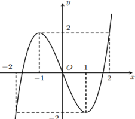
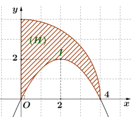
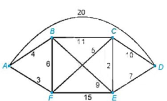
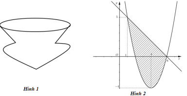
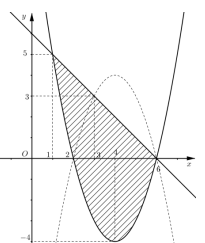

ĐỀ THI TOÁN - ĐỀ SỐ 08 HOT
Phần I: Trắc Nghiệm Nhiều Lựa Chọn
Tóm tắt kiến thức: Cực trị của hàm số
Điểm cực trị xảy ra khi \( f'(x) = 0 \) và \( f'(x) \) đổi dấu qua điểm đó. Số điểm cực trị được xác định từ bảng xét dấu đạo hàm.
Câu 1:
Cho hàm số \( y = f(x) \) xác định trên \( \mathbb{R} \) và có đạo hàm \( f'(x) = x^{2024}(3 - x), \forall x \in \mathbb{R} \). Hàm số đã cho có bao nhiêu điểm cực trị?
Chọn đáp án:
Lời giải:
Đạo hàm: \( f'(x) = x^{2024}(3 - x) \). Nghiệm: \( x = 0 \) (bội chẵn) và \( x = 3 \) (bội lẻ). \( f'(x) \) chỉ đổi dấu qua \( x = 3 \).
Vậy hàm số có 1 điểm cực trị tại \( x = 3 \).
Đáp án: D.
Tóm tắt kiến thức: Tiệm cận ngang
Tiệm cận ngang của hàm số \( y = \frac{ax + b}{cx + d} \) là \( y = \frac{a}{c} \) nếu \( c \neq 0 \), được xác định bằng giới hạn khi \( x \to \pm \infty \).
Câu 2:
Đường tiệm cận ngang của đồ thị hàm số \( y = \frac{2x + 1}{x + 1} \) là:
Chọn đáp án:
Lời giải:
Khi \( x \to \pm \infty \), \( y = \frac{2x + 1}{x + 1} \approx \frac{2x}{x} = 2 \). Vậy tiệm cận ngang là \( y = 2 \).
Đáp án: A.
Tóm tắt kiến thức: Tích phân và quãng đường
Quãng đường của vật chuyển động được tính bằng tích phân của vận tốc: \( s = \int_a^b v(t) \, dt \).
Câu 3:
Một vật chuyển động với tốc độ \( v(t) = 4t + 8 \, (\text{m/s}) \), với thời gian \( t \) tính bằng giây. Tính quãng đường vật đi được trong khoảng thời gian từ \( t = 8 \) đến \( t = 10 \).
Chọn đáp án:
Lời giải:
Quãng đường: \( s = \int_8^{10} (4t + 8) \, dt = \left[ 2t^2 + 8t \right]_8^{10} = (200 + 80) - (128 + 64) = 88 \, \text{m} \).
Đáp án: B.
Tóm tắt kiến thức: Góc giữa hai đường thẳng
Góc giữa hai đường thẳng được xác định qua góc giữa các vector chỉ phương hoặc sử dụng hình học không gian.
Câu 4:
Cho hình chóp \( S.ABCD \) có đáy \( ABCD \) là hình vuông tâm \( O \), cạnh bằng 1. Cạnh bên \( SA \) vuông góc với mặt phẳng \( (ABCD) \), \( SA = 1 \). Góc giữa đường thẳng \( SB \) và \( AC \) bằng:
Chọn đáp án:
Lời giải:
 Gọi \( E \) là trung điểm \( SD \), suy ra \( OE \parallel SB \). Do đó, góc \( (SB, AC) = (OE, AC) \).
Gọi \( E \) là trung điểm \( SD \), suy ra \( OE \parallel SB \). Do đó, góc \( (SB, AC) = (OE, AC) \).
Trong tam giác \( AOE \), \( AE = OA = OE = \frac{\sqrt{2}}{2} \), nên tam giác \( AOE \) đều, góc \( \angle AOE = 60^\circ \).
Vậy góc giữa \( SB \) và \( AC \) là \( 60^\circ \).
Đáp án: C.
Tóm tắt kiến thức: Phương trình lượng giác
Phương trình lượng giác được giải bằng cách biến đổi về dạng cơ bản, kiểm tra điều kiện nghiệm.
Câu 5:
Cho phương trình \( \sin^2 x + (\cos x + 1)^2 = 0 \). Tập nghiệm của phương trình là:
Chọn đáp án:
Lời giải:
\( \sin^2 x + (\cos x + 1)^2 = 0 \implies \sin x = 0, \cos x + 1 = 0 \implies \sin x = 0, \cos x = -1 \implies x = \pi + k2\pi, k \in \mathbb{Z} \).
Đáp án: D.
Tóm tắt kiến thức: Bất phương trình logarit
Giải \( \log_b f(x) < \log_b g(x) \) với \( b > 1 \): \( f(x) > 0 \), \( g(x) > 0 \), và \( f(x) < g(x) \).
Câu 6:
Tập nghiệm của bất phương trình \( \log_5 (2x - 1) < \log_5 (x + 2) \) là:
Chọn đáp án:
Lời giải:
Điều kiện: \( 2x - 1 > 0 \implies x > \frac{1}{2} \), \( x + 2 > 0 \implies x > -2 \). Tổng quát: \( x > \frac{1}{2} \).
Bất phương trình: \( \log_5 (2x - 1) < \log_5 (x + 2) \implies 2x - 1 < x + 2 \implies x < 3 \).
Tập nghiệm: \( \left( \frac{1}{2}; 3 \right) \).
Đáp án: C.
Tóm tắt kiến thức: Đồ thị hàm số bậc ba
Đồ thị hàm số bậc ba \( y = ax^3 + bx^2 + cx + d \) có đặc điểm: hệ số \( a \) quyết định chiều cong, điểm cực trị tại \( y' = 0 \), và giao điểm với trục tung.
Câu 7:
Đường cong ở hình bên dưới là đồ thị của hàm số nào sau đây?

Chọn đáp án:
Lời giải:
Từ đồ thị: \( a > 0 \) (loại C), đi qua \( O(0, 0) \) (loại B), có điểm cực trị tại \( x = 1, -1 \) (loại D).
Với \( y = x^3 - 3x \), \( y' = 3x^2 - 3 = 0 \implies x = \pm 1 \), phù hợp.
Đáp án: A.
Tóm tắt kiến thức: Vector trong hình học
Trong hình tứ diện, trọng tâm \( G \) của tam giác \( BCD \) thỏa mãn: \( \overrightarrow{AB} + \overrightarrow{AC} + \overrightarrow{AD} = 3\overrightarrow{AG} \).
Câu 8:
Cho hình tứ diện \( ABCD \). Gọi \( G \) là trọng tâm của tam giác \( BCD \). Mệnh đề nào sau đây đúng?
Chọn đáp án:
Lời giải:
\( G \) là trọng tâm tam giác \( BCD \), nên \( \overrightarrow{AB} + \overrightarrow{AC} + \overrightarrow{AD} = 3\overrightarrow{AG} \).
Đáp án: C.
Tóm tắt kiến thức: Nguyên hàm
Nguyên hàm: \( \int \sin x \, dx = -\cos x + C \), \( \int e^x \, dx = e^x + C \).
Câu 9:
Cho hàm số \( f(x) = \sin x - e^x \). Trong các khẳng định sau, khẳng định nào đúng?
Chọn đáp án:
Lời giải:
\( \int (\sin x - e^x) \, dx = -\cos x - e^x + C \).
Đáp án: A.
Tóm tắt kiến thức: Xác suất có điều kiện
Với \( A, B \) độc lập: \( P(B \mid A) = \frac{P(A \cap B)}{P(A)} = P(B) \).
Câu 10:
Cho \( A, B \) là hai biến cố độc lập với \( P(A) = 0.2024 \), \( P(B) = 0.2025 \). Kết quả \( P(B \mid A) \) bằng:
Chọn đáp án:
Lời giải:
Vì \( A, B \) độc lập, \( P(B \mid A) = \frac{P(A \cap B)}{P(A)} = \frac{P(A)P(B)}{P(A)} = P(B) = 0.2025 \).
Đáp án: C.
Tóm tắt kiến thức: Cực trị và phương trình đường thẳng
Tìm điểm cực trị bằng cách giải \( y' = 0 \), sau đó xác định phương trình đường thẳng qua hai điểm cực trị.
Câu 11:
Phương trình đường thẳng đi qua hai điểm cực trị của đồ thị hàm số \( y = \frac{x^2 + x + 1}{x + 1} \) là:
Chọn đáp án:
Lời giải:
Hàm số: \( y = \frac{x^2 + x + 1}{x + 1} \). Đạo hàm: \( y' = \frac{x^2 + 2x}{(x + 1)^2} \). Giải \( y' = 0 \implies x = 0, x = -2 \).
Tại \( x = 0 \): \( y = 1 \implies A(0, 1) \). Tại \( x = -2 \): \( y = -3 \implies B(-2, -3) \).
Phương trình đường thẳng: \( \frac{x + 2}{0 + 2} = \frac{y + 3}{1 + 3} \implies y = 2x + 1 \).
Đáp án: A.
Tóm tắt kiến thức: Cấp số cộng
Tổng cấp số cộng: \( S_n = \frac{n}{2} [2u_1 + (n - 1)d] \). Số hạng đầu \( u_1 \) được tìm từ phương trình tổng.
Câu 12:
Cho cấp số cộng có tổng 8 số hạng đầu tiên bằng 72 và công sai \( d = -2 \). Số hạng đầu tiên của cấp số cộng là:
Chọn đáp án:
Lời giải:
\( S_8 = 72 \implies \frac{8}{2} [2u_1 + (8 - 1)(-2)] = 72 \implies 4(2u_1 - 14) = 72 \implies 2u_1 - 14 = 18 \implies u_1 = 16 \).
Đáp án: C.
Phần II: Trắc Nghiệm Đúng/Sai
Tóm tắt kiến thức: Tích phân tính diện tích
Diện tích hình phẳng giới hạn bởi các đường cong: \( S = \int_a^b |f(x) - g(x)| \, dx \). Với hình tròn, diện tích cung được tính bằng tích phân hoặc công thức hình học.
Câu 13:
Cho hình phẳng \( (H) \) giới hạn bởi \(\frac{1}{4}\) cung tròn của đường tròn tâm \( O(0, 0) \) và bán kính bằng 4, parabol \( (P) \) có tọa độ đỉnh \( I(2, 2) \) và đi qua gốc tọa độ \( O \), các đường thẳng \( x = 0 \), \( x = 4 \) như hình vẽ.

Xét các phát biểu sau:
Chọn đáp án cho từng phát biểu:
a)
b)
c)
d)
Lời giải:
a) Sai: Đường tròn tâm \( O(0, 0) \), bán kính 4, phương trình: \( x^2 + y^2 = 16 \), không phải \( x^2 + y^2 = 4 \).
b) Đúng: Parabol đỉnh \( I(2, 2) \), qua \( O(0, 0) \): \( y = k(x - 2)^2 + 2 \). Tại \( x = 0 \), \( y = 0 \implies 0 = k \cdot 4 + 2 \implies k = -\frac{1}{2} \). Phương trình: \( y = -\frac{1}{2}(x - 2)^2 + 2 = -\frac{1}{2}x^2 + 2x \).
c) Sai: Diện tích: \( S = \int_0^4 \left( -\frac{1}{2}x^2 + 2x \right) dx = \left[ -\frac{1}{6}x^3 + x^2 \right]_0^4 = -\frac{64}{6} + 16 = \frac{16}{3} \neq \frac{8}{3} \).
d) Đúng: Hình phẳng \( (H) \): \( S = \int_0^4 \left( \sqrt{16 - x^2} - \left( -\frac{1}{2}x^2 + 2x \right) \right) dx = \pi - \frac{16}{3} = 16\left( \frac{\pi}{4} - \frac{1}{3} \right) \).
Đáp án: a) Sai, b) Đúng, c) Sai, d) Đúng.
Tóm tắt kiến thức: Khoảng cách trong không gian
Khoảng cách từ điểm đến điểm hoặc từ điểm đến đường tròn được tính bằng công thức Euclidean. Tọa độ điểm được xác định từ dữ kiện thực tế.
Câu 14:
Thiền viện Trúc Lâm tại núi Phượng Hoàng cách trung tâm thành phố Đà Lạt 5 km về hướng đông nam, ở độ cao 1600 m so với mực nước biển. Chọn hệ trục tọa độ \( Oxyz \), với gốc tại trung tâm thành phố (độ cao 1500 m), trục \( Ox \), \( Oy \) lần lượt chỉ hướng Nam và Đông, mỗi đơn vị là 1 km. Xét các phát biểu:
Chọn đáp án cho từng phát biểu:
a)
b)
c)
d)
Lời giải:
a) Sai: Độ cao Thiền viện: \( 1600 - 1500 = 100 \, \text{m} = 0.1 \, \text{km} \). Tọa độ: \( (5, 0, 0.1) \), không phải \( (5, 0, 1.6) \).
b) Sai: \( 360 \, \text{ha} = 3.6 \, \text{km}^2 \). Diện tích hình tròn: \( S = \pi R^2 \implies R = \sqrt{\frac{3.6}{\pi}} \approx 1.07 \, \text{km} \), không phải 10.7 km.
c) Sai: Thiền viện \( A(5, 0, 0.1) \), người trên bờ \( B(x, y, -0.5) \), \( OB = \sqrt{x^2 + y^2 + 0.25} = 7 \implies x^2 + y^2 = 48.75 \). Khoảng cách \( AB \geq 2.07 \, \text{km} \), không phải 2.506 km.
d) Sai: Người ở giữa hồ cách Thiền viện tối đa \( 2.07 + 1.07 = 3.14 \, \text{km} < 7.2 \, \text{km} \). Vậy không nghe được tiếng chuông.
Đáp án: a) Sai, b) Sai, c) Sai, d) Sai.
Tóm tắt kiến thức: Tối ưu hóa diện tích
Tối ưu diện tích bề mặt hình hộp chữ nhật bằng cách tìm cực trị của hàm diện tích: \( S'(x) = 0 \), kiểm tra bằng bảng biến thiên.
Câu 15:
Ông Nam xây bể chứa nước hình hộp chữ nhật, chi phí vật liệu mỗi mét vuông diện tích bề mặt như nhau. Gọi \( x \, (\text{m}) \) là chiều rộng, \( 0 < x \leq 4 \). Thể tích bể là \( 36 \, \text{m}^3 \). Xét các phát biểu:
Chọn đáp án cho từng phát biểu:
a)
b)
c)
d)
Lời giải:
a) Đúng: Chiều dài bể là \( 2x \, \text{m} \).
b) Đúng: Thể tích: \( V = x \cdot 2x \cdot h = 36 \implies h = \frac{36}{2x^2} = \frac{18}{x^2} \, \text{m} \).
c) Đúng: Diện tích: \( S = S_{\text{đáy}} + 2S_{\text{mặt trước}} + 2S_{\text{mặt bên}} = 2x^2 + 2x \cdot \frac{18}{x^2} + 2 \cdot 2x \cdot \frac{18}{x^2} = 2x^2 + \frac{108}{x} \).
d) Sai: Hàm \( S(x) = 2x^2 + \frac{108}{x} \), \( S'(x) = 4x - \frac{108}{x^2} = 0 \implies x = 3 \). Tại \( x = 3 \), \( h = \frac{18}{3^2} = 2 \, \text{m} \), không phải 3 m.
Đáp án: a) Đúng, b) Đúng, c) Đúng, d) Sai.
Tóm tắt kiến thức: Xác suất
Xác suất của các biến cố độc lập: \( P(A \cap B \cap C) = P(A)P(B)P(C) \). Xác suất làm đúng/sai \( k \) câu tuân theo phân phối nhị thức.
Câu 16:
Bạn An làm đề ôn tập theo ba mức độ: dễ (xác suất đúng 0.8), trung bình (0.6), khó (0.15). Làm đúng mỗi câu được 0.5 điểm. Xét các phát biểu:
Chọn đáp án cho từng phát biểu:
a)
b)
c)
d)
Lời giải:
Gọi \( A, B, C \) là biến cố An làm đúng câu dễ, trung bình, khó.
a) Sai: \( P(A \cap B \cap C) = 0.8 \cdot 0.6 \cdot 0.15 = 0.072 = 7.2\% \neq 72\% \).
b) Sai: \( P(\text{đúng 2 câu}) = P(\bar{A})P(B)P(C) + P(A)P(\bar{B})P(C) + P(A)P(B)P(\bar{C}) = 0.2 \cdot 0.6 \cdot 0.15 + 0.8 \cdot 0.4 \cdot 0.15 + 0.8 \cdot 0.6 \cdot 0.85 = 0.474 \neq 0.45 \).
c) Đúng: \( P(\text{đúng 3 câu}) = 0.072 \). \( P(\text{sai 3 câu trung bình}) = (0.4)^3 = 0.064 < 0.072 \).
d) Sai: Đạt 2 điểm (4 câu đúng): \( P = (0.15)^4 \cdot (0.2 + 0.4 + 0.85) + (0.15)^3 \cdot (0.6)^2 = 0.001949 = 0.1949\% < 0.2\% \).
Đáp án: a) Sai, b) Sai, c) Đúng, d) Sai.
Phần III: Trắc Nghiệm Trả Lời Ngắn
Tóm tắt kiến thức: Khoảng cách giữa hai đường thẳng
Khoảng cách giữa hai đường thẳng chéo nhau: \( d = \frac{|\overrightarrow{SB} \cdot \overrightarrow{CM} \cdot \overrightarrow{BC}|}{|\overrightarrow{SB} \times \overrightarrow{CM}|} \).
Câu 17:
Trên một miếng đất phẳng, người ta thiết kế một mảnh vườn hình vuông \( ABCD \) cạnh 20 m. Tại đỉnh \( A \), dựng cọc thẳng đứng cao 10 m. Dựng thêm ba cọc \( SB, SD, CM \), biết \( M \) nằm trên cọc \( SD \) và cách đều hai điểm \( S, D \). Tính khoảng cách giữa hai cọc \( SB \) và \( CM \) (làm tròn đến hàng phần trăm, đơn vị mét).
Nhập đáp án:
Lời giải:
Gắn tọa độ: \( A(0, 0, 0) \), \( B(4, 0, 0) \), \( C(4, 4, 0) \), \( D(0, 4, 0) \), \( S(0, 0, 4) \), \( M(0, 2, 2) \).
Khoảng cách: \( d(SB, CM) = \frac{|\overrightarrow{SB} \cdot \overrightarrow{CM} \cdot \overrightarrow{BC}|}{|\overrightarrow{SB} \times \overrightarrow{CM}|} = \frac{4}{\sqrt{3}} \approx 2.31 \, \text{m} \).
Đáp án: 2.31.
Tóm tắt kiến thức: Đường đi ngắn nhất
Thuật toán Dijkstra được dùng để tìm đường đi ngắn nhất trong đồ thị có trọng số không âm.
Câu 18:
Trong trò chơi điện tử, có 6 trụ \( A, B, C, D, E, F \), số lượng thử thách trên đường đi giữa các cặp trụ như hình vẽ. Người chơi xuất phát từ \( A \), đi qua các trụ đến \( D \), mỗi trụ đi qua sẽ bị phá hủy. Tổng số thử thách của đường đi thỏa mãn điều kiện nhận giá trị nhỏ nhất là bao nhiêu?

Nhập đáp án:
Lời giải:
Áp dụng thuật toán Dijkstra:
- Gắn \( I(A) = 0 \). Các đỉnh kề: \( I(B) = 4 \), \( I(F) = 3 \), \( I(D) = 20 \). Chọn \( I(F) = 3 \).
- Từ \( F \): \( I(B) = 9 \), \( I(C) = 8 \), \( I(E) = 18 \). Chọn \( I(B) = 4 \).
- Từ \( B \): \( I(C) = 15 \), \( I(E) = 13 \). Chọn \( I(C) = 8 \).
- Từ \( C \): \( I(E) = 10 \), \( I(D) = 18 \). Chọn \( I(E) = 10 \).
- Từ \( E \): \( I(D) = 17 \). Chọn \( I(D) = 17 \).
Đường đi ngắn nhất: \( A \to F \to C \to E \to D \), tổng thử thách: 17.
Đáp án: 17.
Tóm tắt kiến thức: Khoảng cách giữa hai đường thẳng chéo nhau
Khoảng cách ngắn nhất giữa hai đường thẳng chéo nhau là độ dài đoạn vuông góc chung, xác định bằng điều kiện vector \( \overrightarrow{AB} \) vuông góc với cả hai vector chỉ phương.
Câu 19:
Tại một nút giao thông, hai con đường thuộc hai đường thẳng \( d_1: \frac{x-2}{1} = \frac{y-2}{1} = \frac{z}{-1} \), \( d_2: \frac{x-2}{1} = \frac{y+1}{2} = \frac{z}{-3} \). Tạo con đường \( \Delta \) cắt \( d_1, d_2 \) tại \( A \) và \( B \) sao cho \( AB \) ngắn nhất. Tính độ dài \( AB \) (làm tròn đến hàng phần trăm).
Nhập đáp án:
Lời giải:
\( A(2 + a, 2 + a, -a) \in d_1 \), \( B(2 + b, -1 + 2b, -3b) \in d_2 \). \( \overrightarrow{AB} = (b - a, 2b - a - 3, -3b + a) \).
Vector chỉ phương: \( \vec{u}_{d_1} = (1, 1, -1) \), \( \vec{u}_{d_2} = (1, 2, -3) \).
\( \overrightarrow{AB} \cdot \vec{u}_{d_1} = 0 \), \( \overrightarrow{AB} \cdot \vec{u}_{d_2} = 0 \implies a = -1, b = 0 \).
\( A(1, 1, 1) \), \( B(2, -1, 0) \). \( AB = \sqrt{1^2 + (-2)^2 + (-1)^2} = \sqrt{6} \approx 2.45 \).
Đáp án: 2.45.
Tóm tắt kiến thức: Tối ưu hóa lợi nhuận
Tối ưu hàm lợi nhuận: \( f'(x) = 0 \), kiểm tra cực đại bằng bảng biến thiên.
Câu 20:
Giám đốc nhà hát xác định: giá vé 200 nghìn đồng/người thì có 1000 khách. Tăng/giảm 10 nghìn đồng thì mất/thêm 100 khách. Mỗi khách đem thêm 20 nghìn đồng lợi nhuận dịch vụ. Giá vé để thu nhập lớn nhất là bao nhiêu (nghìn đồng)?
Nhập đáp án:
Lời giải:
Gọi \( x \) là số lần tăng/giảm 10 nghìn đồng. Giá vé: \( 200 + 10x \). Số khách: \( 1000 - 100x \). Điều kiện: \( -20 < x < 10 \).
Thu nhập: \( f(x) = (200 + 10x + 20)(1000 - 100x) = -1000x^2 - 12000x + 220000 \).
\( f'(x) = -2000x - 12000 = 0 \implies x = -6 \). Giá vé: \( 200 + 10(-6) = 140 \, \text{nghìn đồng} \).
Đáp án: 140.
Tóm tắt kiến thức: Xác suất có điều kiện
Xác suất có điều kiện: \( P(C \mid D) = \frac{P(C)P(D \mid C)}{P(D)} \), với \( P(D) \) tính theo công thức xác suất toàn phần.
Câu 21:
Tại một nông trại, các giống dâu tây Nhật Bản, Mỹ, New Zealand chiếm tỉ lệ 15%, 30%, 55%. Chọn ngẫu nhiên một loại dâu cho 13 học sinh thử, 7 bạn kết luận là dâu Mỹ, 4 bạn kết luận Nhật Bản, 2 bạn kết luận New Zealand. Xác suất để giống dâu được chọn là New Zealand là \( \frac{a}{b} \) (tối giản). Tính \( b - a^4 \).
Nhập đáp án:
Lời giải:
\( P(A) = 0.15 \), \( P(B) = 0.3 \), \( P(C) = 0.55 \). \( D \): 7 bạn đoán Mỹ, 4 đoán Nhật, 2 đoán New Zealand.
\( P(D \mid C) = C_{13}^2 \cdot (0.6)^2 \cdot (0.4)^{11} \), \( P(D \mid B) = C_{13}^7 \cdot (0.6)^7 \cdot (0.4)^6 \), \( P(D \mid A) = C_{13}^4 \cdot (0.6)^4 \cdot (0.4)^9 \).
\( P(C \mid D) = \frac{0.55 \cdot C_{13}^2 \cdot (0.6)^2 \cdot (0.4)^{11}}{0.55 \cdot C_{13}^2 \cdot (0.6)^2 \cdot (0.4)^{11} + 0.3 \cdot C_{13}^7 \cdot (0.6)^7 \cdot (0.4)^6 + 0.15 \cdot C_{13}^4 \cdot (0.6)^4 \cdot (0.4)^9} = \frac{4}{1369} \).
\( a = 4 \), \( b = 1369 \). \( b - a^4 = 1369 - 4^4 = 1369 - 256 = 1113 \).
Đáp án: 1113.
Tóm tắt kiến thức: Thể tích khối tròn xoay
Thể tích khối tròn xoay: \( V = \pi \int_a^b [f(x)^2 - g(x)^2] \, dx \), với \( f(x), g(x) \) là các hàm xác định vùng giới hạn.
Câu 22:
Bình cổ có hình dạng được tạo bằng cách xoay phần diện tích (gạch sọc) giới hạn bởi \( f(x) = x^2 - 8x + 12 \), \( g(x) = -x + 6 \) quanh trục \( Ox \).

Thể tích của bình cổ là bao nhiêu (làm tròn đến hàng đơn vị)?
Nhập đáp án:
Lời giải:

Giao điểm \( h(x) = -f(x) = -x^2 + 8x - 12 \) và \( g(x) = -x + 6 \): \( -x^2 + 8x - 12 = -x + 6 \implies x = 3, 6 \).
Thể tích: \( V = \pi \int_3^6 [(-x^2 + 8x - 12)^2 - (-x + 6)^2] \, dx + \pi \int_1^3 (-x + 6)^2 \, dx - \pi \int_1^3 (x^2 - 8x + 12)^2 \, dx \).
Kết quả: \( V = \frac{108}{5}\pi + \frac{98}{3}\pi - \frac{113}{15}\pi = \frac{701}{15}\pi \approx 147 \).
Đáp án: 147.